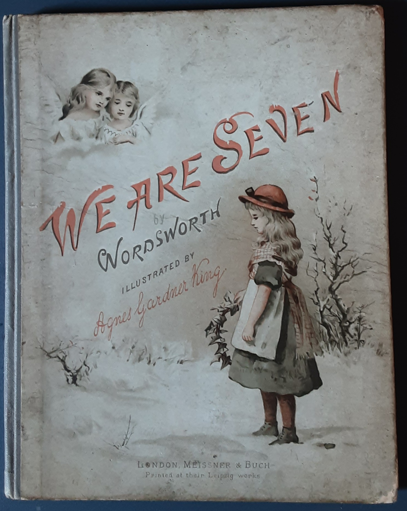

All the way back to the First Fleet in Australia it seems the dominant culture has no way of effectively expressing the desire it holds (on the one hand) to engage with other cultures on the basis of amity. That’s because (on the other hand) it can’t seem to do so outside its own presumption which then becomes domination.
It’s worth knowing that it was written at the dawning of the new century, in 1798, the same year as Malthus’s An Essay on the Principle of Population and at a time when there was much agitation for a census — in part to understand Britain's capacity to field armies against Napoleon. The first Census Act, known as the Population Act was passed in 1800 with the first national census undertaken the next year.
The rest of this post is simply the poem and then two secondary sources — one in which the great 20th-century philosopher A. N. Whitehead speaks of the relevance of “The Romantic Reaction” to Western culture, though, however much it mays surprise you, his focus is the philosophy of science. The second is a much more contemporary discussion by a literary theorist.
So here’s the poem — and what a poem. I had no idea of it — had never heard of it. I was moved to tears just hearing the premise. And as I grow more familiar with it and read the kinds of sources I’m extracting below, its magnificence just grows.
—A simple child,
That lightly draws its breath,
And feels its life in every limb,
What should it know of death?
I met a little cottage girl:
She was eight years old, she said;
Her hair was thick with many a curl
That clustered round her head.
She had a rustic, woodland air,
And she was wildly clad:
Her eyes were fair, and very fair;
—Her beauty made me glad.
"Sisters and brothers, little maid,
How many may you be?"
"How many? Seven in all," she said,
And wondering looked at me.
"And where are they? I pray you tell."
She answered, "Seven are we;
And two of us at Conway dwell,
And two are gone to sea.
"Two of us in the churchyard lie,
My sister and my brother;
And, in the churchyard cottage, I
Dwell near them with my mother."
"You say that two at Conway dwell,
And two are gone to sea,
Yet ye are seven! I pray you tell,
Sweet maid, how this may be."
Then did the little maid reply,
"Seven boys and girls are we;
Two of us in the churchyard lie,
Beneath the churchyard tree."
"You run about, my little maid,
Your limbs they are alive;
If two are in the churchyard laid,
Then ye are only five."
"Their graves are green, they may be seen,"
The little maid replied,
"Twelve steps or more from my mother's door,
And they are side by side.
"My stockings there I often knit,
My kerchief there I hem;
And there upon the ground I sit,
And sing a song to them.
"And often after sunset, sir,
When it is light and fair,
I take my little porringer,
And eat my supper there.
"The first that died was sister Jane;
In bed she moaning lay,
Till God released her of her pain;
And then she went away.
"So in the churchyard she was laid;
And, when the grass was dry,
Together round her grave we played,
My brother John and I.
"And when the ground was white with snow
And I could run and slide,
My brother John was forced to go,
And he lies by her side."
"How many are you, then," said I,
"If they two are in heaven?"
Quick was the little maid's reply,
"O master! we are seven."
"But they are dead; those two are dead!
Their spirits are in heaven!"
'Twas throwing words away; for still
The little maid would have her will,
And said, "Nay, we are seven!"
As Timothy Wilcox puts it:
Wordsworth's poetic-philosophic project was part of what the philosopher Alfred North Whitehead called "the Romantic reaction" in Science and the Modern World. Wordsworth, Whitehead writes, was moved by a "a moral repulsion" in which, "He felt that something had been left out, and that what had been left out comprised everything that was most important."
You can appreciate more of this either by reading my fairly substantial extract from Alfred North Whitehead’s Science and the Modern World (1925), from Chapter V“The Romantic Reaction” or the original which is here.
The Protestant Calvinism and the Catholic Jansenism exhibited man as helpless to co-operate with Irresistible Grace: the contemporary scheme of science exhibited man as helpless to co-operate with the irresistible mechanism of nature. The mechanism of God arid the mechanism of matter were the monstrous issues of limited metaphys{cs and clear logical intellect. Also the seventeenth century had genius, and cleared the world of muddled thought.
The eighteenth century continued the work of clearance, with ruthless efficiency. … Mankind soon lost interest in Irresistible Grace; but it quickly appreciated the competent engineering which was due to science. Also in the first quarter of the eighteenth century, George Berkeley launched his philosophical criticism against the whole basis of the system. He failed to disturb the dominant current of thought. … In the present lecture, I propose in the first place to consider how the concrete educated thought of men has viewed this opposition of mechanism and organism. It is in literature that the concrete outlook of humanity receives its expression. Accordingly it is to literature that we must look, particularly in its more concrete forms, namely in poetry arid in drama, if we hope to discover the inward thoughts of a generation.
A scientific realism, based on mechanism, is con joined with an unwavering belief in the world of men and of the higher animals as being composed of self-determining organisms. This radical inconsistency at the basis of modern thought accounts for much that is half-hearted and wavering in our civilisation: It would be going too far to say that it distracts thought- It enfeebles it, by reason of the inconsistency lurking in the background. After all, the men of the Middle Ages were in pursuit of an excellency of which we have nearly forgotten the existence. They set before themselves , the ideal of the attainment of a harmony of the understand ing. We are content with superficiaJ orderings from diverse arbitrary starting points. For instance, the enter prises produced by the individualistic energy of the European peoples presuppose physical actions directed to final causes. But the science which . is employed · in their development is based on a philosophy which asserts that physical causation is supreme, and which disjoins Jhe physical cause from the final end. It is not popular to dwell on the absolute contradiction here involved. It is the fact, however you gloze it over with phrases. …
In other words, that mechanism can, at most, presuppose a mechanic, and not merely -a mechanic but its mechanic. The only way of mitigating mechanism is by the discovery that it is not mechanism.
When we leave apologetic theology, and come to ordinary literature, we find, as we might expect, that the scientific outlook is in general simply ignored. So far as the mass of literature is concerned, science might never have been heard of. …
Wordsworth in his whole being expresses a conscious reaction against the mentality of the eighteenth century. This mentality means nothing else than the acceptance of the scientific ideas at their full face value. Wordsworth was not bothered by any intellectual antagonism. What moved him was a moral repulsion_ He felt that something had been left out, and that 'what had been left out comprised everything that was most important. …
There are then two possible theories as to the mind. You can either deny that it can supply for itself any · experiences other than those provided for it by the body, or you can admit them. …
John Stuart Mill was maintaining his doc trine of determinism. In this doctrine volitions are determined by motives, and motlves are expressible in terms of antecedent conditions including states of mind as well as states of the body.
It is obvious that this doctrine affords no escape from the dilemma presented by a thoroughgoing mechanism. For if the volition affects the state of the body, then the molecules in the body do not blindly run. If the v-olition does not affect the state of the body, the mind is still left in its uncomfortable position.
Mill's doctrine is generally accepted, especially among scientists, as though in some way it allowed you to accept the extreme doctrine of materialistic mechanism, and yet mitigated its unbelievable consequences. It does nothing of the sort. Either the bodily molecules blindly run, or they do not. If they do blindly run, the mental states are irrelevant in discussing the bodily actions.
I have stated the arguments concisely, because in truth the issue is a very simple one. Prolonged discussion is merely a source of confusion. …
I would term the doctrine of these lectures, the theory of organic mechanism. In this theory, the molecules may blindly run in accord ance with the general laws, but the molecules differ in their intrinsic characters according to the general or ganic plans of the situations in which they find them selves.
The discrepancy between the materialistic mechanism of science and the moral intuitions, which are pre supposed in the concrete affairs of life, only gradually assumed its true importance as the centuries advanced. …
[After showing how Milton and then Pope do not focus on the tension materialism creates Whitehead continues.] Wordsworth's Excursion is the next English poem on the same subject. …
Very characteristicall), the poem begins with the line,
Twas summer, and the sun had mounted high.
Thus the romantic reaction started neither with God nor with Lord Bolingbroke, but with nature. We are here witnessing a conscious reaction against the whole tone of the eighteenth century. That century approached nature with the abstract analysis of science, whereas Wordsworth opposes to the scientific abstractions his full concrete experience.
A generation of religious revival and of scientific advance lies between the Excursion and Tennyson's In Memoriam. The earlier poets had solved the perplexity by ignoring it. That course was not open to Tennyson.
Accordingly his poem begins thus:
A mighty maze! but not without a plan. 'Strong Son of God, immortal Love, Whom we, that have not seen Thy face By faith, and faith alone, embrace Believing where we cannot prove.'
The note of perplexity is struck at once. The nineteenth century has been a perplexed century, in a sense which is not true of any of its predecessors of the modern period. In the earlier times there were opposing camps, bitterly at variance · one questions which they deemed fundamental. But, except for a few stragglers, either camp was whole-hearted.
The importance of Tennyson's poem lies in the fact that it exactly expressed the character of its period. Each individual was divided against himself. In the earlier times, the deep thinkers were the clear thinkers, Descartes, Spinoza, Locke, Leibniz. They knew exactly What they meant and said it. In the nineteenth century, some of the deeper thinkers among theologians and philosophers were muddled thinkers. Their assent was claimed by incompatible doctrines; and their efforts at reconciliation produced inevitable confusion. …
Wordsworth was … a thoughtful, well-read man, with philosophical interests, and sane even to the point of prosiness. In addition, he was a genius. He weakens his evidence by his dislike of science. … In this respect, his characteristic thought can be summed up in his phrase, 'We murder to dissect.'
He alleges against science its absorption in abstractions. His consistent theme is that the important facts of nature elude the scientific method. It is important therefore to ask, what Wordsworth found in nature that failed to receive expression in science. I ask. this question in the interest of science itself; for one main position in these lectures is a protest against the idea that the abstractions of science are irreformable and unalterable.
It is the brooding presence of the hills which haunts him: His theme is nature insolido, that is to say, he dwells on that mysterious presence of surrounding things, which imposes itself on any separate element that we set up as an individual for its own sake. He always grasps the whole of nature as involved in the tonality of the par ticular instance. That is why he laughs with the daffo dils, and finds in the primrose thoughts 'too deep for tears’.
[After citing a passage of The Prelude, Whitehead proceeds:] In thus citing Wordsworth, the point I wish to make is that we forget how strained and paradoxical is the view of nature which modern science imposes ' on our thoughts. Wordsworth, to the height of genius, expresses the concrete facts of our apprehension, facts which are distorted in the scientific analysis. Is it not possible that the standardised concepts of science, are only valid within narrow limitations, perhaps too narrow for science itself? …
[W]e must recollect the basis of our procedure. I hold that philosophy is the critic of abstractions. Its function is the double one, first of harmonising them by assigning to them their right relative status as ab stractions, and secondly of completing them by direct comparison with more concrete intuitions of the uni verse, and thereby promoting the formation of more complete schemes of thought. It is in respect to this comparison that the testimony of great poets is of such importance. Their survival is evidence that they express deep intuitions of mankind penetrating into what is universal in concrete fact. Philosophy is not one among the sciences with its own little scheme of abstractions which it works away at perfecting and improving. It is the survey of sciences, with the special objects of their harmony, and of their completion. It brings to this task, not only the evidence of the separate sciences, ,but also its own appeal to concrete experience. It confronts the sciences with concrete fact.
Finally, here are some extended passages from an analysis bearing on Wordsworth and drawing on “We are seven” by Maureen N. McLane in Romanticism and the Human Sciences Poetry, Population, and the Discourse of the Species which can also be downloaded in its entirety at the link.
If the Lyrical Ballads are indeed ‘‘experiments,’’ as Wordsworth called them, they are experiments in a poetics of the human sciences as well as experiments in poetic style and readerly tolerance. For in his relentless invocation of types of marginal humanity (children, rustics, idiots, females, Indians – to which might be added the ‘‘Old Man Travelling’’ and ‘‘The Convict’’), Wordsworth brings us to the threshold of an impasse: the imminent breakdown in understanding across human beings is not so much avoided as indicated, articulated, dramatized. …
What is so brilliant about the poem is the way Wordsworth economically reveals the psychological and cogni- tive structures behind the refrain. Why must the maid repeat? Because her interlocutor adopts a stance of assumed stupidity and repeats his own question. Yet the narrator/interlocutor is stupid in a way he himself cannot have assumed. He who would teach is stymied; more- over, in his attempt to correct the maid’s conceptions he reveals the rigid structure of his own.
When the maid counts off her family members, including the two who ‘in the church-yard lie,’’ the man refuses to mirror this count, enumerating again only those who are alive: …
It is fascinating to see the little maid’s continued resistance to this subtraction, and further to witness the revelation of the grounds for her resistance. The little maid defends her count by reference to the visible, the tangible, the concretely remembered, ongoing practice, and the seasonal: ‘‘Their graves are green, they may be seen,’’ she says. She provides the man with brief histories of her siblings’ deaths, which are remembered in conjunction with the season’s rhythms. … The maid thinks in terms of season, not month, date or calendar year; she retains significant and telling details as mnemonic traces, such as the fact that the summer after Jane’s death was ‘‘dry.’’ Her experience of temporality implicitly differs from the man’s, as does her relation to her space – which is always full, concrete, and inhabited in the maid’s world.
She eats her porridge on her siblings’ graves; she knits there; she sings to them. She refuses to respect the logical oppositions which govern the man’s thought: ‘‘life’’ and ‘‘death’’ are not opposed. Death ruptures neither the continuity or the contiguity of the family relation, although certainly the maid realizes that John and Jane have suffered a change of state, which she represents as a change of place (of Jane: ‘‘and then she went away’’ []). Yet the leave-taking of death does not to her appear as a translation to another sphere: she is in her way a literalist of the imagination, gesturing to the grave where John ‘‘lies by [Jane’s] side’’. The decomposed body does not enter the maid’s account; nor does the possibly transfigured soul. ‘‘Immortality’’ will not appear in the maid’s thought, precisely because ‘‘mortality’’ does not appear to her in the same guise as it does to the man.
Yet what is most interesting about ‘‘We are seven’’ is not the illustration of a primitive, localized, charming yet unphilosophical knowledge of death: the tension of the poem, and the source of its momentum, lies in the double revelation of the maid’s and master’s minds. For just as the maid’s steadfast repetition forces the man to point to lively limbs as the only true basis for counting, her further explanation of her siblings’ deaths propels the man to invoke a religio-ideological complex, ‘‘Heaven,’’ as the proper place for depositing those dead siblings. The maid’s longest speech gives the narrative of her siblings’ deaths, but to this moving account the man is apparently insensible. He does not respond to this speech per se but presses on with his calculus of presence, absence, and the obligatory subtraction of the dead: It is the man who introduces the concept, Heaven; it is he who moves from the earth and its homely graves to a concept which is supposed to put a stop to the maid’s repetition. Heaven is to function as his pedagogical trump-card. He will show her a new, truer structure of reality: for this she needs such concepts as Heaven. …
What Wordsworth shows us is not merely the gap in mind, but the currents of power – pedagogic and erotic – fueling the man’s attempt to bridge the gap. The poem offers a critique of a version of ethnographic research: the speaker in the framing stanza proposes a kind of anthro- pological question, but as he narrates the encounter we see that he proceeds as a willful pedagogue who intends to enlighten this charming native. The encounter, in its motivation and progress, may be read as a dissection of the bad conscience of anthropological inquiry itself: the researcher simultaneously desires the other and wishes to master her through enlightenment. The speaker’s attraction to the girl mandates that she be the one subjected to the inquiry which had been asked before as if it were hypothetical. …
Moreover, the disintegration of the speaker’s composure – the comic discombobulation – reveals in other ways how motivated was his address to the little maid. If this is human science, it is not a science purged of emotion or passion or a wish to master another. But if the man carries within him a power/knowledge complex tinged with erotic longings for the ‘‘wildly’’ different, the little maid successfully resists his impulse to appropriate her by educating her. …
Even more interesting is the persistence of the man in his stance, one which reduces the maid’s responses to ‘‘will’’ while refusing to recognize his incessant questioning and his refusal to hear as another, more sinister manifestation of will. …Sentimental indulgence becomes exasperated mastery rather quickly. By assessing their impasse in terms of ‘‘her will,’’ the man shows how he will inevitably reduce encounter to contest, communica- tion to assertion. One is never ‘‘throwing words away,’’ as the master claims, if one considers words channels for engagement rather than tools for domination. …
[T]he ethnographic encounter, which I argue is but one instance among many of encounters between the potentially incom- mensurate. It is the man, not the maid, who transforms an encounter into a struggle; the poem enacts this transformation and subtly, comi- cally criticizes it. The poem knows more, as it were, than the man; the poem offers itself as a space large enough to contain incommensurate minds. This is an asymmetrical incommensurability: the difference between man and maid appears to the man as a problem to be solved by a kind of twisted Socratic method – it is he who forces the maid to explain herself in order to correct her. …
And it is odd to be forced to account for oneself and one’s family to a stranger, however benevolent he may seem. The maid registers the strangeness of the encounter, whereas the man proceeds as if this were a purposeful and transparent venture: well, child, how many are there in your family? …The comic defeat of the interrogation leaves us with a bittersweet impasse: the maid has resisted, but the Master remains self-righteous in his exasperation. There has been no attempt to inhabit the maid’s world, only a wish to have it presented in order to be corrected. What could have been an authentic dialogue lapses – because of the man’s mulishness – into mutual exasperation, the maid explaining herself to increasingly deaf ears.
I am a TS Elliot man myself.
The girl is possibly in denial about death. The man definitely is. He shifts the dead into a fictional world (heaven). Almost all of us are in denial about life. We shift the causes of our behavior to a personal fictional world (the mind). That saves us the hard work of investigating what really causes us to behave the way we do. We get even nuttier when we accuse others of interfering with that fictional word's "right" to be the sole cause of our behaviour.